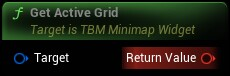

Gets the currently active grid. ie the grid the player is overlapping and is displayed on the minimap
|
Target
TBM Minimap Widget Object Reference
|
|
Return Value
TBM Registered Grid Structure (by ref)
|
Gets the currently active grid. ie the grid the player is overlapping and is displayed on the minimap |